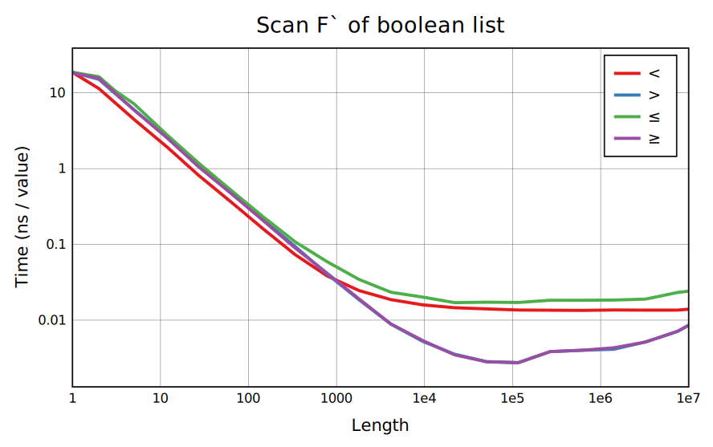
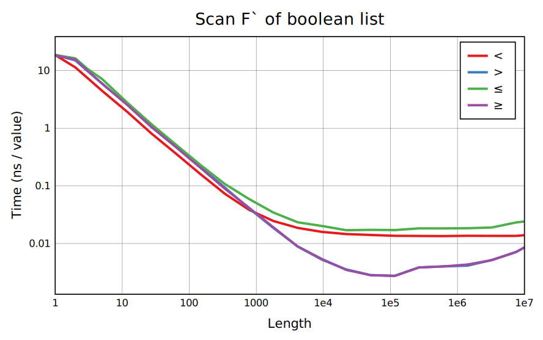
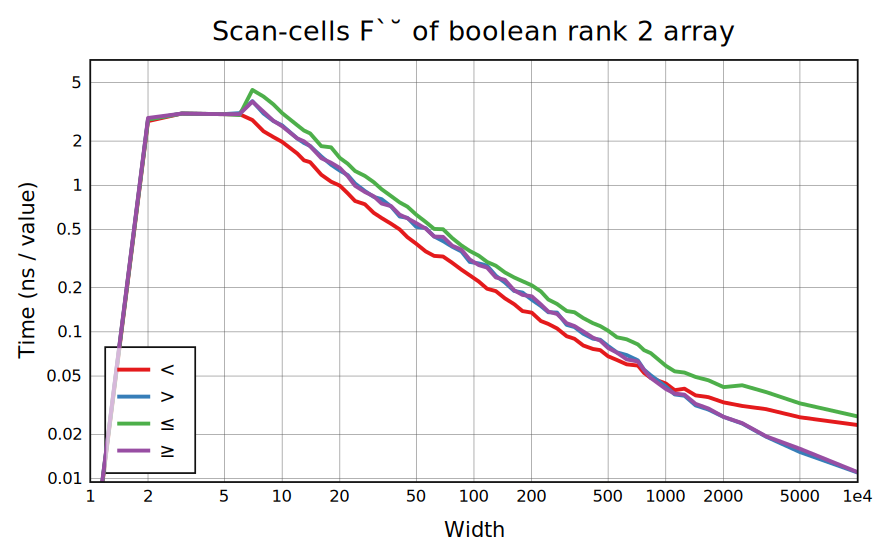
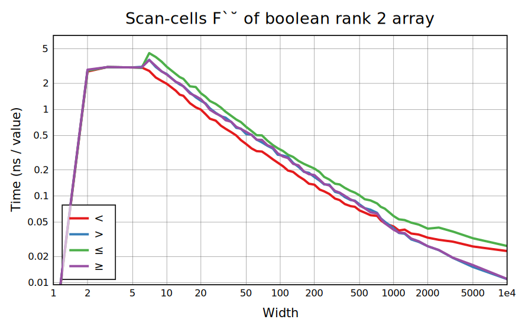

Scans behave a lot like folds in terms of requirements, but are much slower because of the need to compute and output intermediate results (while a fast ordering for an associative fold won't combine everything completely until the end). Like folds, +`, ⌊`, and ⌈` are the only important non-boolean cases, with ×` also used but hardly ever on long arrays. These three have SIMD code and others call one step at a time. Furthermore, ⌊` and ⌈` have code to quickly skip past regions with no new minimum or maximum, which applies to the random benchmarks here; the performance on a generic array can be slightly over 2x worse.
Functions ⌊` and ⌈` are exactly associative and have no overflow, so the implementation works out nicely. The prefix sum has to deal with overflow, which slows it down for integer inputs, and has to go in order for floats because float addition isn't associative. However, the factor of 2 to 3 loss in performance from an in-order scan is not as bad as the nearly 10x for fold.
Typical boolean scans ∧∨≠+ are handled well: ∧∨ search for the first 0 or 1, ≠ uses carry-less multiply, and + has SIMD code. The scan <` is notable as a way to turn off every other 1 in groups of 1s, and has word-at-a-time code that uses the carry of addition (and a lot of bit manipulation) to do this. Less common scans =≤≥>- are implemented in terms of the others, which adds slight overhead.
High-rank scan is done with row-wise operations for long enough rows (above about 5 elements) but has no other optimizations.
Other than for booleans, scan-cells is currently just scan called on each cell. Besides the obvious improvement of doing nothing for width 1, there are various ways that small-width cases could be sped up. Common boolean scans have dedicated implementations using various bit-bashing tricks.

 



 
